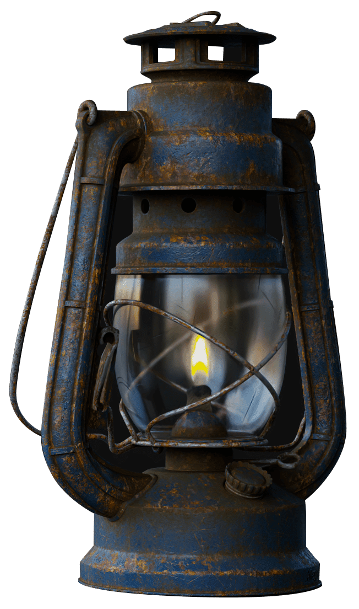
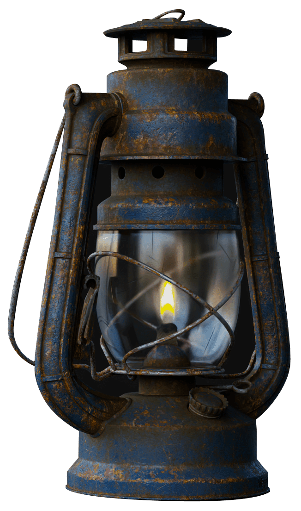

Introduccion a
Creatividad
sin límites
KeyShot 10 le ofrece una capacidad creativa sin límites para ayudarle a realizar sus ideas más rápidamente. Construido como el centro de todas sus necesidades de visualización, KeyShot ofrece una facilidad, simplicidad y accesibilidad incomparables para darle una completa libertad creativa y un nivel de agilidad visual que le permite explorar su diseño a una velocidad de pensamiento sin igual.
RealCloth
RealCloth es una tecnología pendiente de patente de Luxion que impulsa un nuevo y potente tipo de material que permite la creación y visualización de materiales tejidos realistas. El tipo de material proporciona control del patrón de tejido (Pro) y la capacidad de añadir fácilmente fibras volátiles. También se han añadido nuevos materiales de RealCloth a la Biblioteca.

Denoise
Renderizaciones suaves, rápidas y bonitas con sólo pulsar un botón. Denoise funciona tanto en modo CPU como en modo GPU para eliminar el ruido en la vista en tiempo real y en la salida de renderizado. Convierte esa contracción de tiempo en un ahorro de tiempo. Encienda Denoise y vea cómo su imagen se renderiza hasta 30 veces más rápido con la ventaja de utilizarla en un número ilimitado de KeyShot Image Styles.
GPU Mode
KeyShot 10 introduce la capacidad de aprovechar toda la potencia de trazado de rayos acelerada en la GPU de NVIDIA RTX con OptiX. Disponible tanto para renderizado en tiempo real como para renderizado local, el modo GPU de KeyShot permite acceder a los recursos de la GPU con un solo clic para aprovechar el escalado del rendimiento de varias GPU y el hardware de aceleración de trazado de rayos dedicado en las GPU aptas para RTX de NVIDIA.
Biblioteca de modelos 3D
KeyShot 10 le ofrece una nueva biblioteca de modelos llena de modelos 3D de la más alta calidad, especialmente curados para complementar los productos de su escena. Todos los modelos 3D vienen completos con materiales y texturas, y son fácilmente buscados, filtrados y añadidos a cualquier escena con un simple arrastrar y soltar desde KeyShot Cloud.
Web Configurator (PRO)
KeyShot 10 introduce el poder de generar configuradores de productos interactivos basados en navegador. Con variaciones de productos totalmente renderizados utilizando los modelos, materiales y estudios de su elección, los configuradores web pueden ser producidos para compartir en línea de forma privada o alojados para proporcionar una experiencia de opción de producto más atractiva.
Libertad Creativa
Abre tu imaginación.Con nuevos materiales y texturas, KeyShot 10 abre su libertad creativa para un nuevo nivel de detalle y control sobre las imágenes de sus productos.
Fuzz Material (PRO)
Para esa sensación cálida y confusa.Esa sensación cálida y difusa que te inunda no está en tu cabeza, es un nuevo sombreador de geometría de material que aporta un nuevo nivel de realismo a tus productos. Simplemente abra el KeyShot Material Graph (Pro) y añada cualquier cantidad de pelusa que necesite en la superficie de cualquier material. Controla la longitud, la aleatoriedad, la densidad y mucho más para lograr un aspecto perfecto y difuso.
Contorno de Textura
El borde que necesitas.Imagínate ponerle una ventaja a cualquier material. Con el contorno como textura, ahora tiene más control y flexibilidad al crear materiales personalizados. Puede utilizarlo para añadir un efecto de ilustración sobre materiales del mundo real como el metal o el plástico.

Control de la curva de animación (PRO)
Mételo con cuidado. Gíralo hacia afuera.Controlar tu animación nunca ha sido tan fácil. Personalizar el movimiento o la apariencia de una animación o de un color de material, bump, opacidad u otra propiedad. Añada controles rápidamente a lo largo de la curva y ajústelo todo en tiempo real para crear increíbles animaciones de piezas y materiales.

Material genérico (BRDF)
Lo último en posibilidades de material.Sólo es genérico de nombre. La flexibilidad que añade es cualquier cosa menos. Ajuste las propiedades de brillo, barniz, metálico, anisotrópico y más. Es un nuevo material que ofrece un sinfín de posibilidades para crear acabados de materiales increíbles.

Agilidad visual
Crea como nunca antes.KeyShot 10 agiliza la importación, amplía la compatibilidad y amplía la salida para ofrecerle un flujo de trabajo más ágil de principio a fin.
Importación simplificada
Simplificado para empezar a crear más rápido.Eso fue rápido. Y con las nuevas opciones de importación diseñadas para acelerar la eficacia de las importaciones, estará en su escena y en el renderizado en un abrir y cerrar de ojos. Importe archivos KeyShot a escenas, guarde la configuración de importación y mucho más.
Importación de pintor de sustancias
Haz que esas texturas salten.Pasa de una experiencia de textura envolvente a una experiencia de renderizado 3D envolvente. KeyShot 10 genera automáticamente los materiales KeyShot a partir de los conjuntos de texturas que se crean en Substance Painter. No hay necesidad de mapeo ni ajustes adicionales, sólo arrastre y suelte la textura de su Substance Painter donde desee para obtener el hermoso resultado final que necesita.
 

Plugin Browzwear VStitcher
Vea su ropa bajo una nueva luz.KeyShot 10 introduce un nuevo plugin para el software líder en 3D para el diseño y desarrollo de prendas de vestir. Envíe sus prendas desde VStitcher directamente a KeyShot 10 con todos los colores y texturas incluidos. Es un nivel completamente nuevo de visualización de ropa fotorealista.


X-Rite AxF ™ 1.6
Materiales profundos, ricos y maravillosos.El formato de intercambio de apariencia estándar de la industria (AxF) de X-Rite tiene aún más potencia y es totalmente compatible con KeyShot 10. El formato de archivo flexible muestra ahora atributos de apariencia precisos para materiales translúcidos y turbios similares al plástico.

Velocidad de pensamiento
The flexibility to visualize faster.KeyShot es rápido. Desde la configuración de la escena y la interacción en tiempo real hasta lo que usted hace y la reacción, KeyShot 10 ofrece las capacidades que usted necesita para crear con rapidez.


Menú Herramientas
Acceso más rápido para empezar a crear más rápido.Geometría, material y herramientas de cámara en un solo lugar. Los nuevos menús de Herramientas de KeyShot 10 consolidan el acceso a sus herramientas favoritas, le permiten editar la geometría más rápidamente y añade la nueva herramienta de Importación de Material para aplicar las apariencias rápidamente. Son las mejoras en el flujo de trabajo como ésta las que hacen que KeyShot sea tan agradable de usar.

Configurador de subcomponentes y miniaturas (PRO)
Un nuevo nivel de opciones de productos.Los modelos de padres y componentes obtienen un nuevo tercer nivel de dependencia para ampliar las opciones de productos y crear grupos más grandes de variaciones. Y ahora, agregue miniaturas personalizadas de modelos y materiales a su Configurador para comunicarle las opciones exactas del producto.

Probar KeyShot
Descargue KeyShot y vea lo rápido que puede crear imágenes fotográficas sorprendentes de sus datos en 3D.
Probar Ahora